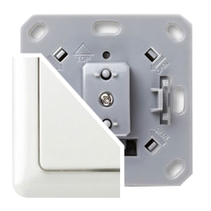
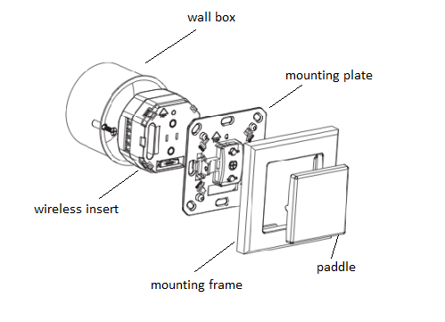

DUW_054368
Firmware Version : 1.0 |
 |
Quick StartA This device is a Z-Wave actuator. Triple click one of the buttons on the device will include the device. A green blinking of LED will indicate successful inclusion. The device is excluded by triple click to one of the buttons. Please refer to the chapters below for detailed information about all aspects of the products usage. |
Product description
The Duwi Flush Mountable Motor Control is a wireless actuator able to control 230 V powered motors for blinds and jalousies. The device is delivered as a complete set with flush mountable insert, paddle and mounting frame compatible to the design of the Duwi switching series Everlux color white. The paddle of the device is used to control the device itself . The status of the motor control is indicated on a dual color LED for test purposes. This device is designed for a 3 wire system and needs a neutral wire in the wall box.
Installation Guidelines
The insert is designed to fit into standard circular European wall boxes with 60 mm diameter. The insert combined with the mounting plate can be screwed in top of the wall box using the two screws delivered with the device. The mounting frame is then attached to the mounting plate and the switch is completed by pushing the switching paddle into the mounting frame. Mind the arrow on the inserts top side showing the mounting direction of the insert. It is also possible to mount the insert without any local operation behind a cover or inside a lamp. The mounting plate, frame and the switching paddle become useless in such a scenario.

The schematics below shows how to wire the actuator. The hot wired from the mains distribution panel is connected to the inserts contacts L. The contact S is the switched contact and need to be connected to the cable to the load. The cable from the load is connected to neutral N. If there are both neutral and hot wire in the wall box the neutral from the mains panel and the neutral to the lamp need to be connected. It is not harmful if the two connections L and S are mismatched on the actuator.
A fuse protects the electronics of the actuator. The fuse is accessible on the top side of the device. Inside the plug there is the working fuse plus a spare fuse.

CALIBRATION:
The device is able to position a blind on a desired percentage position (50 percent open) when controlled wirelessly. To allow this kind of positioning the total travel times of the motor in opening and closing direction must be determined using the following process:
- Move the blind into the upper end position.
- Push "UP" and "DOWN" for two seconds until LED blinks green. (Remark: Paddle need to be removed in order to push both buttons in parallel)
- Move the blind into the other end position using the UP and DOWN buttons. The LED will blink faster.
- Once the buttons are released at the end position this position is saved and confirmed by 3 sec green LED
Behavior within the Z-Wave network
I On factory default the device does not belong to any Z-Wave network. The device needs to join an existing wireless network to communicate with the devices of this network. This process is called Inclusion. Devices can also leave a network. This process is called Exclusion. Both processes are initiated by the primary controller of the Z-Wave network. This controller will be turned into exclusion respective inclusion mode. Please refer to your primary controllers manual on how to turn your controller into inclusion or exclusion mode. Only if the primary controller is in inclusion or exclusion mode, this device can join or leave the network. Leaving the network - i.e. being excluded - sets the device back to factory default.
If the device already belongs to a network, follow the exclusion process before including it in your network. Otherwise inclusion of this device will fail. If the controller being included was a primary controller, it has to be reset first.
Blinking red/green LED indicates that the device is in factory reset state. Once the controller is turned into inclusion mode triple click one of the buttons on the device will include the device. A green blinking of LED will indicate successful inclusion that will be turned off shortly afterwards. The device is excluded by triple click to one of the buttons when the controller is in exclusion mode.
Operating the device
The actuator is operated by the local switching paddles or wirelessly using Z-Wave commands (communication pattern 1 4, 5 and 7). If the insert is mounted correctly pushing the upper part of the paddle will turn on the load; pushing the lower part of the paddle will turn the blind into the close position, pushing the upper part of the paddle will turn the blind into the open position. Hitting the paddle during operation (moving motor) will stop the operation for safety reasons. Keeping the paddle pushed moved the motor until the desired position is reached. Relasing the paddle will stop the motor.
The device is also able to remotely operate other devices (communication pattern 5) by sending wireless Z-Wave commands.
Child Protection
The device can be turn into a child protection mode. In this mode all local operation is disabled.
The child protection mode MUST be turned on wirelessly. However it in protected by sequence mode is possible to unlock the device for local operation with a triple click. The unlock state will last for 5 seconds.
LED Control
- Red and green blinking continuously: Device is not included in a Z-Wave network
- Red lights up for 3 seconds: Device was not included/excluded after being put into learn mode by triple press of up/down button
- Green lights up for 3 seconds: The inclusion/exclusion was successful or new association was saved successfully
- Green or no light: depending on settings of configuration parameter for LED control
Associations
A Z-Wave devices control other Z-Wave devices. The relationship between one device controlling another device is called association. In order to control a different device, the controlling device needs to maintain a list of devices that will receive controlling commands. These lists are called association groups and they are always related to certain events (e.g. button pressed, sensor triggers, ...). In case the event happens all devices stored in the respective association group will receive a common wireless command.
Association Groups:
| 1 | Basic On/Off Group (max. nodes in group: 5) |
Technical Data
| Power Supply | 230V ~50-60 Hz |
| Attachable Loads | Motors up to 1800 W |
| Fuse | Type: T 1.25 A H (Load 1.25 Ampere, high shutdown capacity), D: 5 mm, L: 20 mm |
| IP Rating | IP 20 |
| Frequency | 868.42 MHz (SRD Band) |
| Wireless Range | up to 100 m outside, on average up to 20 m inside buildings |
| Explorer Frame Support | No |
| SDK | 5.02 pl1 |
| Device Type | Slave with routing capabilities |
| Generic Device Class | Multilevel Switch |
| Specific Device Class | Multiposition Motor |
| Routing | Yes |
| FLiRS | No |
| Firmware Version | 1.0 |